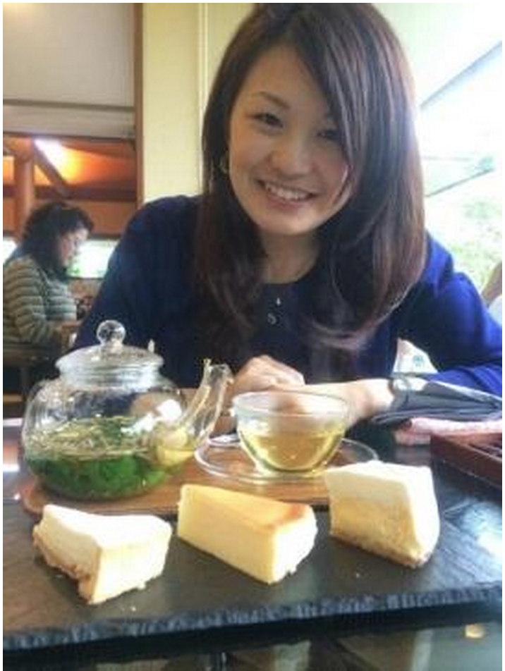

中医学の考えでは食の中で、より体にいいものを‘薬膳’‘漢方’となります。
スーパーで買える食材を正しく選べば“体質改善”の近道となります。
特別なモノである必要はありません。例えば、ヤマイモ。これは漢方では胃腸のお薬として、
キノコ類は、余分な水分を体外に出すときに漢方薬でもつかうものです。
そのためには、体質診断が必要です。まずは、こちらで体質チェック！６タイプ別におすすめ食材を選び出します。
自分に合った食事で最短の体質改善を目指しましょう。
＊２つのタイプが同時にでることもありますし、日々の体調でこのチェックは変わります。
体調が変わった時は最後チェックしてください。
『気』は、元気の気、気力のというように、活力の素です。
気が不足すると、エネルギー不足の状態になり、疲労・倦怠・息切れを感じやすくなります。また、寒さから体を守り、風邪から体を守っているのも『気』です。このようにバリア機能としての働きもあるので、気虚タイプは、花粉症などアレルギー体質だったり寒暖差に弱かったりという症状も現れます。
おすすめの食材
穀物、いも類、豆類、きのこ類など、少量ずつ他種類食べましょう。
具体的には山芋、お米、しいたけ、しめじ、味噌、豆腐などがおすすめです。
避けたい食材
エネルギーを生み出しやすい状態にしたいので、胃腸に悪影響をもたらすものはNGです。
具体的には、冷たい飲み物、食べ物、刺し身など生のもの、天ぷらなど脂っぽいものや
唐辛子など刺激が強いものです。
生活習慣改善ポイント
早食いには注意！よく噛んで食べ、胃腸の消化吸収を高めて、食べたものがエネルギーになりやすい状態にしましょう。
また、呼吸からもエネルギーが作られすため、呼吸も大切です。ウォーキングなどの適度な運動をしましょう。
過労は、気を消耗してしまうので、過労を避けて、休息や睡眠をしっかりとることも大切です。
体質改善におすすめの漢方薬は？
＊漢方薬を服用の際は専門家にご相談ください。
ストレスや精神的な過労が続き、“気”がうまく巡らず停滞した状態。“気”の巡りは自律神経の働きと重なります。このタイプはイライラしてしまう、怒りっぽい、胸脇・腹部が張って苦しい、ゲップ、ガスが多い、下痢と便秘を繰り返すという症状が現れます。女性の場合は生理前にイライラする、頭痛がある、ニキビができるなど、生理前の不調が多いです。
おすすめの食材
芳香野菜、柑橘類を食べましょう。オレンジ、みかん、すだち、ユズ、春菊、セロリ、ミントがおすすめです。
＊香りのある食材は、あまり長時間火にかけると、大切な成分がとんでしまうので、料理の最後に加えてさっと加熱してください。
生活習慣改善ポイント
巡らない状態を改善するためには、好きなことをしてリフレッシュしましょう！
体質改善におすすめの漢方薬は？
＊漢方薬を服用の際は専門家にご相談ください。
中医学では、『血』は、体の栄養という役割と、精神を安定させるという役割があります。眠りが悪くなる、物忘れという症状も血虚の症状です。女性は、月経による出血があるため、男性よりも血が不足しがちです。特に、偏食、食生活が単調になりやすい人は、血虚になりやすいと言われています。また、妊娠・出産は血を沢山消耗しますので、産後は血虚になりやすいです。妊活中～産後の女性は血を補うモノを多く食べましょう。
おすすめの食材
色の濃い野菜、果実、種子を取り入れましょう。
ほうれん草、小松菜、レバー、なつめ、プルーン、レーズン、黒ゴマ、黒豆、烏骨鶏、豚肉などおすすめです。
生活習慣改善ポイント
頭をつかう作業は、血を消耗します。このタイプはちょっとしたことがきっかけで不眠になりがちなので、夜寝る前にスマホ、パソコン、お仕事は控えてください。就寝前の１～２時間はできるだけリラックスした時間を過ごすようにしましょう。
体質改善におすすめの漢方薬は？
＊漢方薬を服用の際は専門家にご相談ください。
血の巡りが悪く老廃物が溜まりやすい体質です。顔や唇の色が暗い、シミやそばかすが多い、慢性的な肩こり、腰痛、頑固な頭痛や生理痛という症状が起こりやすいのもこのタイプです。血がドロドロの状態が続くと血管が弱くなり、動悸、不整脈、胸が苦しい、血圧が高いなどの症状が現れ、酷くなると心筋梗塞、狭心症、脳卒中にも発展してゆきます。体内にしこり、女性だと子宮筋腫、子宮内膜症など現れることが多いです。
おすすめの食材
辛味野菜や香辛料を活用しましょう。
具体的な食材としては、タマネギ、ニンニク、ラッキョウなど。サバ、イワシなど青魚もオススメです。
生活習慣改善ポイント
美食、過食を避けましょう。喫煙・肉の脂味などの動物性脂肪、バター、生クリーム、チョコレートは、血液をドロドロにしてしまうので要注意。また長時間の同じ姿勢をとり続けないよう工夫しましょう。
体質改善におすすめの漢方薬は？
＊漢方薬を服用の際は専門家にご相談ください。
体にとって必要な潤いが不足しているタイプ。
赤ちゃんの肌はしっとりして瑞々しいですが、年齢を重ねるごとにカサカサして、しわが気になってきます。このように体にとって必要な潤いが不足しているのが陰虚タイプです。肌の乾燥、空咳、口や喉が乾く、便がコロコロなどの症状が現れます。また潤い不足のために熱が生まれ、冷たい飲み物を飲みたくなる、頬が赤みを帯びやすい、のぼせ、ほてり、微熱、寝汗をかくなどがこのタイプの特徴です。
おすすめの食材
みずみずしい潤いの食材、果物を食べましょう。
トマト・レモン・梨、メロン、れんこん、豆腐、白きくらげ、はちみつなど。
生活習慣改善ポイント
夜遅くまで起きていると悪化する体質なので、１２時前には寝て、夜型の生活を改めましょう。また、汗のかきすぎに注意が必要です。長時間のサウナは控えましょう。食べ物では、刺激物、香辛料を使い過ぎないようにしてくださいね。
体質改善におすすめの漢方薬は？
＊漢方薬を服用の際は専門家にご相談ください。
体にとって必要な潤いが不足しているタイプ。
水は流れが滞ると濁ってきます。体に中でも水分代謝が悪いと、余分な水分や脂肪分が溜まった『痰湿』の状態になり、吹き出物・痰・時には軟便や下痢となって体の外に出ようとします。頭が重い、体が重だるい、吐き気がする、また雨の日に調子が悪いという方も多いです。痰湿タイプの人は、暴飲暴食、脂っこいものや甘いものの摂り過ぎ、運動不足の傾向があり、肥満や高脂血症になりやすい人です。
おすすめの食材
食物繊維に富んだ雑穀類、海藻類、根菜類、こんにゃくなどを食べましょう。
食物繊維は、消化液や酵素でも消化されにくく、腸内で老廃物や水分を吸収して便として外へ排出する役割があります。
生活習慣改善ポイント
運動し、汗をかき、たまった余分な水分や老廃物を積極的に排出しましょう。
甘いもの、脂っこいもの、アルコール、清涼飲料水の摂り過ぎに気をつけましょう。
体質改善におすすめの漢方薬は？
＊漢方薬を服用の際は専門家にご相談ください。
『冷えを改善する為に何にでも生姜を入れています』
『自分にはどんな健康法が合うのかわからなくて…』
年間約1000人の健康相談の中で、このような声が非常に多いことに気が付きました。
特に、早く体を良くしたい！という30代の妊活女性は情報過多な時代に本当に疲れてしまっているのが現実です。
漢方薬局に訪れる７割は女性のお悩みです。その中の5割は‘妊活’相談です。
細かいカウンセリングで体質に合う食、漢方、生活スタイルを提案しています。
こんな方は、一度体質チェックを受けてみませんか？
□カウンセリング料5000円/30分
□カウンセリング料無料、漢方薬のみ
33歳女性；独身 薬剤師 満足度:★★★★★
健康には気を使っているつもりだったけれど、わかっていてもできていないこともありました。
親身になって話を聞いていただけて、仕事と大学の両立で多忙な私の生活スタイルでも、
肩こり、冷え対策などすぐに実践できることを教えていただけて大満足です！
本格的に妊活をスタートする時はぜひご相談させてください。
妊活が気になる年代として、基礎体温もつけてみようと思います。
＊基礎体温表、病院での検査データ、服用されている西洋薬も確認しながらお体の様子を探りますので、資料があればお持ちください。
